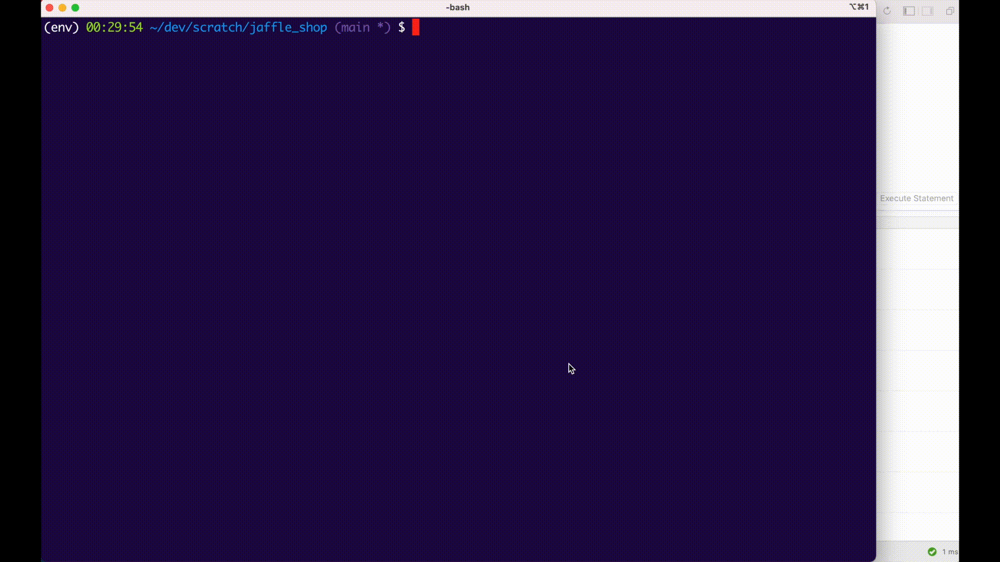

Stage 3 introduced unique, not_null, accepted_values, relationships and singular tests. That gets you to L2-L3 testing maturity in a model: every primary key tested, every status column constrained, a singular test or two for the weird edge cases.
Stage 6 is about the next two levels: turning tests into a production-grade quality system with config knobs that let you ship tests safely, custom tests that codify your project’s conventions, and packages that bring in pre-built assertions.
A useful mental model from the dbt community:
| Level | What it looks like |
|---|---|
| L1 Infancy | No tests. Every change is a guess. |
| L2 Toddlerhood | PK tests on final models (unique + not_null on dim_customers.customer_id). |
| L3 Childhood | ~5 tests per model. Coverage on FKs and enums (your Stage 3 exit state). |
| L4 Adolescence | Package tests for richer assertions (dbt_expectations), custom generic tests for project conventions. |
| L5 Adulthood | High coverage + advanced strategies — severity tuning, --store-failures for CI debugging, source freshness, audit_helper for refactors. |
Stage 6 takes you from L3 to L4.
Every generic test accepts a config: block. The five most useful keys:
| Config key | What it does |
|---|---|
severity |
error (default — fails the run) or warn (continues). Useful for tests that flag issues but shouldn’t block deployment. |
where |
Row-level filter applied to the test query. Lets you scope an assertion to recent data, non-deleted rows, etc. |
limit |
Caps the number of bad rows returned. Useful for tests that might find thousands of failures — limit to 100 to keep CI logs readable. |
error_if / warn_if |
Threshold-based severity. “Warn if more than 10 bad rows; error if more than 30.” Lets a test be lenient at low volume but strict at high. |
store_failures |
Materializes the test’s bad rows into a real warehouse table (in dbt_test__audit schema by default) so you can query them after the run. |
Example combining several:
- name: status
tests:
- accepted_values:
values: [placed, shipped, completed, return_pending, returned]
config:
severity: warn
where: "order_date >= '2018-01-01'"
store_failures: true
This says: “Check status against the allowed values, but only for orders since 2018, and just warn instead of erroring. Keep the bad rows in a queryable table so I can debug them later.”
Three places, in increasing precedence:
dbt_project.yml — project-wide defaults: tests: +severity: warn makes every test in the project warn-only.{{ config(severity='warn') }} at the top of a tests/*.sql file.The pattern matches everything else in dbt: project-wide → folder/file-wide → node-specific. The most-specific setting wins.
Built-in tests cover the basics. The dbt community has built two huge test packages that fill the gaps:
| Package | What it adds |
|---|---|
dbt_utils |
Variants on the built-ins: dbt_utils.expression_is_true, dbt_utils.unique_combination_of_columns, dbt_utils.not_null_proportion. The first three you typically reach for. |
dbt_expectations |
Inspired by Great Expectations. Statistical tests like expect_column_values_to_be_between, expect_column_mean_to_be_between, expect_row_values_to_have_data_for_every_n_datepart. Way richer than what’s in the box. |
audit_helper |
Refactoring-only: compare a new model against a legacy version row-by-row. Not really a “test”; more an audit tool. |
Stage 5 already installed dbt_utils. Stage 6’s dbt_expectations_install exercise adds the second package and uses one of its assertions.
Some assertions are project-specific: “every order amount in this codebase should always be positive”, “every metric column should always be non-null on weekdays”. No package macro covers exactly that pattern, but you also don’t want to write a singular test for every model that has the assertion.
That’s where custom generic tests come in. You write a Jinja test block once:
{% test positive(model, column_name) %}
select * from {{ model }} where {{ column_name }} <= 0
{% endtest %}
…and then you can apply it to any model’s any column:
columns:
- name: total_amount
tests:
- positive
- name: payment_count
tests:
- positive
A custom generic test is the bridge between “one-off SQL” (singular) and “project convention” (built-in). You codify a rule once, reuse it everywhere.
The exercises walk through L4 testing concretely:
severity_warn — extend the Stage 3 accepted_values test with severity: warn + where:. Demonstrates the config block.custom_generic_test — write a positive generic test, attach it to numeric columns in int_order_payments. Demonstrates the custom-test mechanism.dbt_expectations_install — install the package, add expect_column_values_to_be_between on fct_orders.amount. Demonstrates package tests.The remaining Stage 6 items (dbt_show_command, commands_tour, target_directory_tour) are the dbt CLI tour — how senior practitioners actually navigate a dbt project day to day.
severity: warn on tests that should hard-fail. The point of testing is to catch bad data; downgrading every test to warn is a way to make tests cosmetic. Reserve warn for tests that are informational (a metric that drifted, a count that’s higher than usual) — not for primary-key uniqueness.where: filters that hide real problems. A where: "is_active = true" clause makes the test pass on inactive rows by ignoring them. That’s fine if inactive rows genuinely don’t have the same constraint; risky if you’re using where: to silence test failures you should fix.store_failures is one-shot. The audit table holds only the most recent run’s failures — there’s no built-in history. If you need failure trends over time, you need a separate process (or dbt_dataquality package).Press n to start the first Stage 6 exercise.